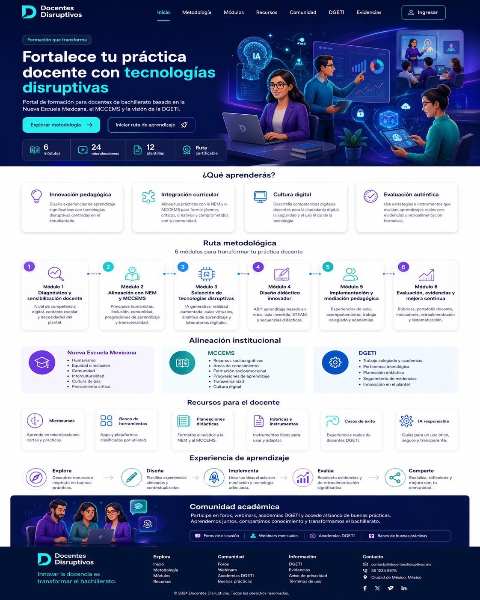

🧭
Arquitectura completaInicio, metodología, módulos, recursos, comunidad, DGETI, evidencias, pilotaje y panel docente.
Este prototipo integra páginas adicionales, formularios reales, panel docente, evidencias, comunidad y analítica básica. Está pensado para mostrar cómo la metodología puede pilotarse en un entorno navegable, cercano a producción y listo para demostración académica.

A diferencia del prototipo inicial, esta versión incorpora una arquitectura más completa, navegación consistente, formularios funcionales con almacenamiento local, módulos con productos esperados, recursos filtrables, un espacio de comunidad y una página de analítica para el pilotaje.
Inicio, metodología, módulos, recursos, comunidad, DGETI, evidencias, pilotaje y panel docente.
Diagnóstico, planeación didáctica, inscripción a webinar, evidencias y retroalimentación.
Indicadores visibles para demostrar avance, evidencias y participación durante la prueba piloto.
La plataforma hace evidente la secuencia pedagógica y metodológica que deseas mostrar en tu tesis: diagnosticar, alinear, seleccionar, diseñar, implementar, evaluar y mejorar.
Formulario inicial para reconocer competencia digital, necesidades y metas de implementación.
Conecta NEM, MCCEMS y DGETI mediante un esquema visible y lenguaje accesible para docentes.
Permite bosquejar actividades, explorar tecnologías y descargar instrumentos para la práctica.
Habilita una narrativa de academias, webinars y banco de buenas prácticas.
Recibe registros del pilotaje con tipo de evidencia, módulo y nivel de impacto.
Resume resultados de manera visual para defensa, seguimiento y mejora continua.
Sirve como evidencia de diseño, visualización del modelo, experiencia de usuario y pilotaje de intervención.
Puede mostrarse a docentes, directivos o academias como propuesta de acompañamiento y mejora docente.
Permite simular registros, evidencias y decisiones metodológicas antes de un desarrollo de producción.

El dashboard concentra el avance de ruta, microcredenciales, recursos, módulo activo y enlaces hacia evidencias y webinars.